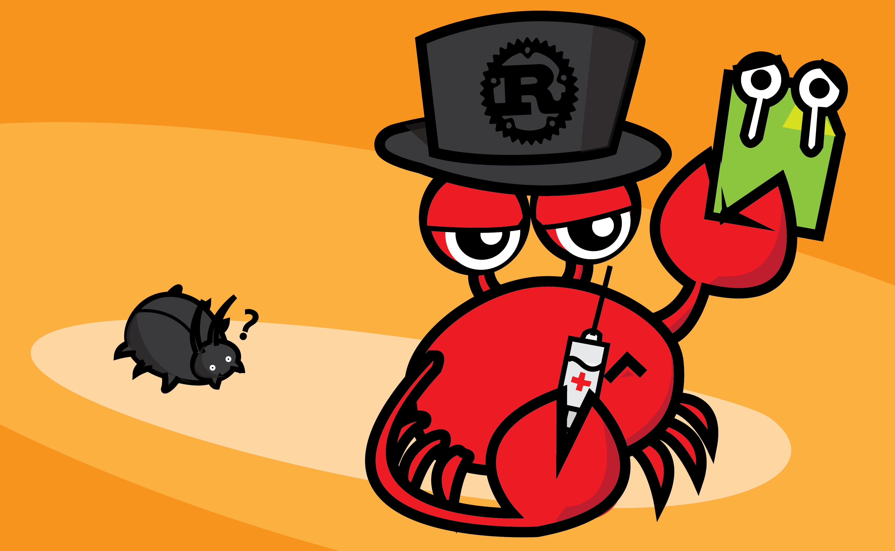

Viết test trong Rust the idiomatic way
Chống chỉ định: cái tiêu đề đặt nữa tây nữa việt là cố ý, để câu view, chứ thực ra không phải tại mình không biết dịch chữ idiomatic ra đâu :v À nhân tiện nói luôn, idiomatic way có nghĩa là một cách chính thống, ở đây bàn về cách viết test được cộng đồng Rustlang công nhận và khuyến khích.

Testing là một chức năng quan trọng mà bất kì ngôn ngữ nào cũng cần phải có, viết unit test cũng là một việc mà bất kì lập trình viên nào cũng cần phải làm, thậm chí với một vài cộng đồng như Golang và Ruby thì người ta bảo thủ tới mức xem việc publish một project không có unit test giống như là một cái tội luôn vậy đó :))
Đối với Go thì chúng ta có go test, đối với Ruby chúng ta có thể chạy test thông qua rake (đúng không nhỉ? một thanh niên không code Ruby cho hay), Node thì thôi không nên nhắc tới làm gì :( và tất nhiên là Rust cũng có công cụ testing built-in thông qua lệnh cargo test.
Cách test trong Rust
Để viết test trong Rust thì khá là đơn giản, chỉ cần tại bất kì đâu trong chương trình, viết một hàm theo dạng:
#[test]
fn minh_thich_thi_minh_test_thoi() {
...
}
Hàm này có attribute #[test] (dân Java, C#, thường gọi cái này là annotation) để báo cho Rust compiler biết rằng đây là một hàm test, các hàm này sẽ được chạy khi chúng ta gọi lệnh:
cargo test
Ví dụ, ta viết một hàm test như sau:
#[test]
fn this_function_should_drop_all_tables() {
assert!(1 + 1 == 2)
}
Và chạy test, ta thu được kết quả:
➜ kipalog git:(master) ✗ cargo test
Compiling testrun v0.1.0 (file:///Users/huy/code/kipalog)
Finished debug [unoptimized + debuginfo] target(s) in 0.27 secs
Running target/debug/kipalog-90d752c0679f22d9
running 1 test
test this_function_should_drop_all_tables ... ok
test result: ok. 1 passed; 0 failed; 0 ignored; 0 measured
Idiomatic way để viết test trong Rust
Theo cuốn sách The Rust Programming Language, cộng đồng Rust khuyến khích 2 cách viết test "chuẩn" đó là: Viết trong tests module và Viết trong thư mục tests. Vậy tại sao lại có 2 cách viết?
Dùng tests module để viết Unit Test
Để tạo tests module thì chúng ta có thể viết code sau ở bất kì đâu:
#[cfg(test)]
mod tests {
}
Từ khóa mod để tạo một module mới, và khi gặp attribute #[cfg(test)], Rust compiler sẽ chỉ compile module này khi chạy test, khi build bình thường thì module này sẽ bị bỏ qua để tiết kiệm thời gian compile.
Giả sử chương trình của chúng ta có một hàm cần test là sum(), chúng ta sẽ viết test cho hàm này như sau:
fn sum(a: i32, b: i32) -> i32 {
a + b
}
#[cfg(test)]
mod tests {
use super::sum;
#[test]
fn sum_should_return_something() {
assert!(sum(1, 2) == 3)
}
}
Lưu ý lệnh:
use super::sum;
Vì hàm sum của chúng ta không được khai báo bên trong module tests nên trước khi sử dụng nó trong hàm test, chúng ta phải đưa nó vào scope của module hiện hành bằng lệnh use.
Chạy thử bộ test trên sẽ cho kết quả như sau:
➜ kipalog git:(master) ✗ cargo test
Finished debug [unoptimized + debuginfo] target(s) in 0.0 secs
Running target/debug/kipalog-e90e21d36164f8bb
running 1 test
test tests::sum_should_return_something ... ok
test result: ok. 1 passed; 0 failed; 0 ignored; 0 measured
Bạn sẽ thấy test case được chạy bây giờ là tests::sum_should_return_something, tức là Rust đã chạy test cho hàm sum_should_return_something thuộc module tests, khác với kết quả được in ra ở ví dụ test một hàm đơn lẻ ở đầu bài.
Các test được viết trong module này thường sẽ là các unit test.
Dùng thư mục tests để viết integration tests
Ngoài cách test ở trên, chúng ta có thể tạo thư mục tests nằm cùng cấp với thư mục src của dự án, và viết các file test ở trong này. Mỗi một file *.rs nằm trong thư mục này được xem như là một crate riêng, và khi compile cũng sẽ nằm ở một target riêng, các bạn lưu ý chỗ này.
Để viết các integration test thì chúng ta tạo file tests/integration_tests.rs.
Giả sử chúng ta có module kipalog và có hàm sum() như đã khai báo ở phần trước, nội dung file test của chúng ta sẽ có dạng:
extern crate kipalog;
#[test]
fn test_sum_one_and_two() {
assert!(kipalog::sum(1, 2) == 3);
}
Như đã nói ở trên, vì bên trong thư mục tests, mỗi file là một crate riêng, điều này có nghĩa là chúng ta phải import module kipalog vào, giống với cách sử dụng crate trong thực tế, vì vậy cách này thích hợp để viết integration test.
Chạy test trên thì output sẽ có dạng:
➜ kipalog git:(master) ✗ cargo test
Compiling kipalog v0.1.0 (file:///Users/huy/Desktop/Code/kipalog)
Finished debug [unoptimized + debuginfo] target(s) in 0.41 secs
Running target/debug/integration_tests-e2d20617c9c89446
running 1 test
test test_sum_one_and_two ... ok
test result: ok. 1 passed; 0 failed; 0 ignored; 0 measured
Running target/debug/deps/kipalog-f232ef2295608ede
running 1 test
test tests::sum_should_return_something ... ok
test result: ok. 1 passed; 0 failed; 0 ignored; 0 measured
Doc-tests kipalog
running 0 tests
test result: ok. 0 passed; 0 failed; 0 ignored; 0 measured
Có thể thấy trong output chia làm 3 phần, phần đầu tiên là kết quả chạy test được viết trong integration_tests.rs của chúng ta, phần 2 là phần code test trong module tests đã viết ở phần trước. Phần cuối cùng là Doc-tests, là một chức năng của Rust cho phép test luôn code trong document, các bạn có thể xem chi tiết tại bài The Rust Programming Language - Testing.
Một phút dành cho quảng cáo: Cộng đồng Rustlang Việt Nam đã được thành lập, các bạn có thể tham gia tại các địa chỉ sau: